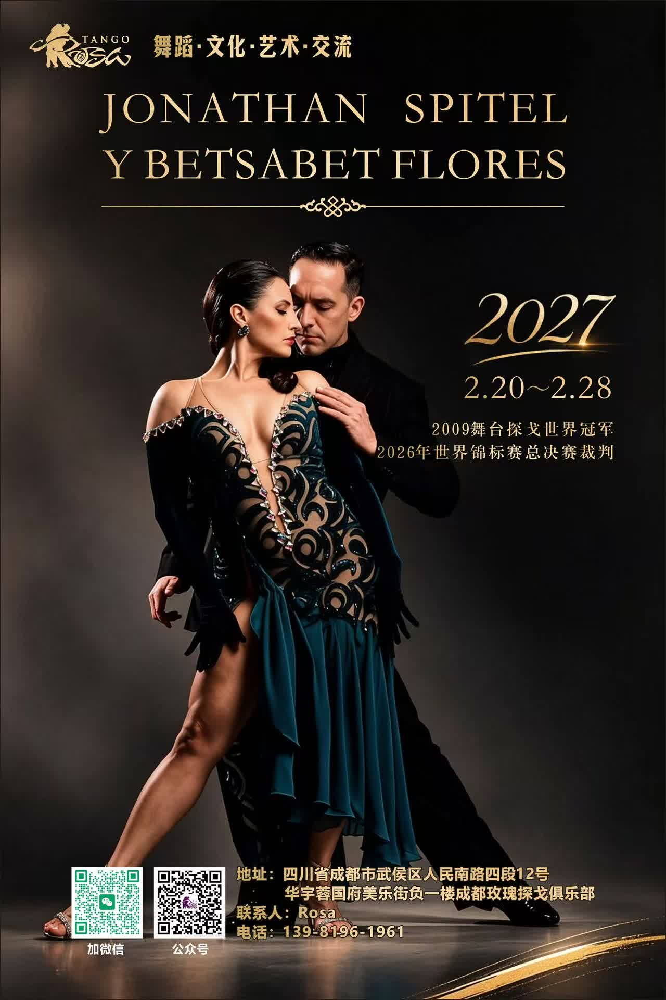

춤 · 문화 · 예술 · 교류 · 2027년 2월 20–28일 · 청두
청두 장미 탱고 클럽쓰촨성 청두시 우허우구 런민 남로 4단 12 화위 룽궈푸 메이레 거리 지하 1층B1, Meile Street, Huayu Rongguofu, No. 12, Section 4, Renmin South Road, Wuhou District, Chengdu, Sichuan
수업 일정과 요금은 아직 발표되지 않았습니다. 주최 측에 문의해 주세요.
자료 출처: 주최 포스터(위챗 탱고 그룹, 2026년 10월).자세한 내용은 주최 측에 확인해 주세요.